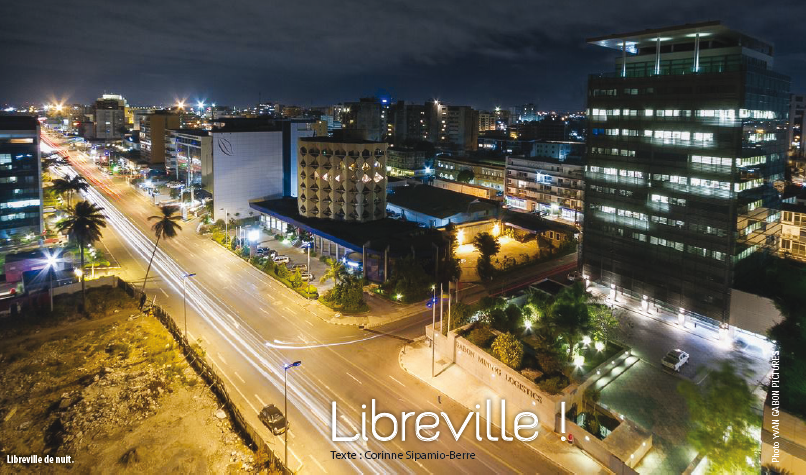

My favorite city is Libreville the capital town of Gabon. Not as big as tokyo or even Abuja Libreville is a litte city of 703,904 inhabitants. Small town but amazing admosphere, borded by the sea Librevile is a special place to relax and enjoy the nature.
Libreville is also well known for its population, it's a city full of peace and joy. People are really peaceful and welcoming. The down side of Libreville is surely the cost of living, compared to some other countries in Africa the cost of living is very high in Librevile.
